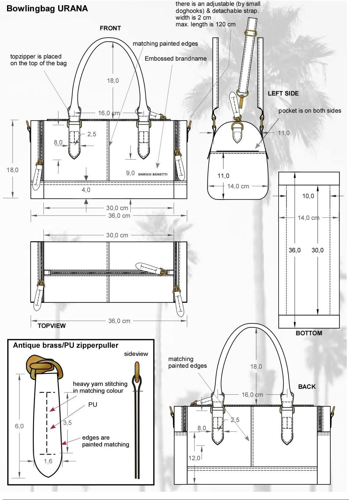
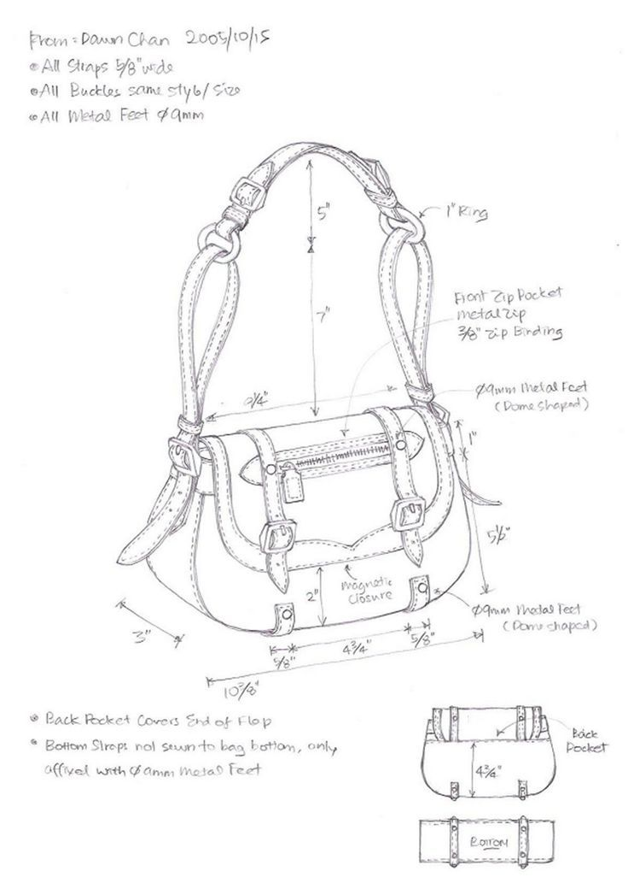

La fiche technique dont j’ai besoin
Avec une photo de face uniquement, je ne peux donner qu’une estimation. Pour un prix et un patronage précis, il me faut le dessin technique avec les vues et les mesures, comme dans les exemples de cette page.
Vues
Face, dos, côté, dessus et dessous, plus une vue de 3/4.
Dimensions hors tout
Largeur, hauteur et profondeur, en haut et à la base si le sac s’évase ou se resserre.
Mesures de style
Rabat et recouvrement, position des fermetures, distance entre les attaches, largeur des bandes, passants et applications.
Anses et bandoulières
Hauteur, largeur et longueur ; réglables ou amovibles.
Intérieur
Doublure, poches avec leurs mesures, zips et séparateurs.
Matières et accessoires
Matière et couleur de chaque pièce ; code, taille et finition des anneaux, boucles, fermetures et pieds, ou leurs fiches techniques.
Façonnage
Tranches peintes ou rempliées, passepoils, surpiqûres, matelassage, laçage, logo et tolérances.
Exemples de fiches techniques
Voici le type de fiches avec lesquelles je travaille. Pour chacune, j’indique la classe que j’attribuerais à ce modèle.

Sac à rabat avec cloison intérieure, fermeture à pression, lacet décoratif et poche intérieure zippée.

Sac à rabat lacé sur les bords, pompon et boucle : travail décoratif sur tout le contour.

Sac à main structuré avec fermoir métallique, pieds, compartiment intérieur et doublure en Alcantara.

Sac bowling avec zip supérieur, poches latérales zippées, bandoulière réglable et amovible.

Sac bowling bi-matière avec passepoil, double zip, anneaux carrés et chaîne.

Saddle bag avec sangles et boucles, poche avant zippée, pieds et poche arrière.

Sac bombé matelassé avec nombreuses applications métalliques, passepoil au fond et bandoulière amovible.